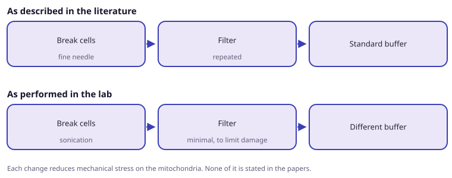

Training placement on a project performing mitochondrial transplantation into granulocytes. It established that the working protocol differs from the published one at three points, each reducing mechanical stress on the mitochondria.
Objective
- Observe mitochondrial transplantation performed by a lab doing it routinely.
- Compare the working protocol against the published one.
Findings
- Cells are broken open by sonication rather than with a fine needle.
- Filtration is kept to a minimum, to avoid damaging the mitochondria.
- A different buffer is used.
- Isolated mitochondria are highly sensitive, which is why the PORTER approach keeps them in blood instead.

Consequence
- Explains the low uptake and rapid loss of activity in the neutrophil experiments.
- Turned a set of negative results into a defined next experiment.